我的 AI 原生开发流程：一个真实案例的完整复盘
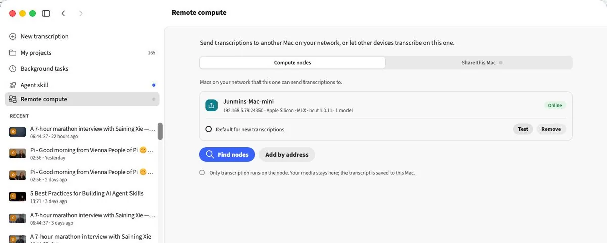
很多人对 AI 开发的理解停留在"让 AI 帮我写代码"。
这个理解没有错，但只不完全对。写代码在整个软件开发流程中只是一个环节，而且在 AI 时代，它反而是变化最小、最不需要操心的环节，因为现在的大模型在编码方面已经训练得极好了，简单的自然语言提示词就够了。
真正有意思的变化是在代码之外：需求怎么分析、方案怎么设计、原型怎么做、测试怎么跑，这些"写代码之外"的事情，才是 AI 原生开发真正改变游戏规则的地方。
前几天我用 AI 给自己的 App 加了一个新功能，过程比较典型，值得拿出来完整复盘一下。
先说结论：流程没变，角色变了
在展开案例之前，先说一个最核心的认知：
AI 原生开发，本质上还是传统的软件开发流程——可行性分析、方案设计、原型设计、编码实现、测试验证。这些步骤一个都没少。
变的是什么？执行主体。
以前每个环节都是人亲手干。现在，人变成了指挥官，Agent 变成了执行者。人只在关键路径上做确认和决策，但具体的分析、设计、编码、调试，全部交给 Agent 去执行。
打个比方：你从一线程序员升级成了技术总监。你不再写每一行代码，但你要决定做不做、怎么做、做得对不对。
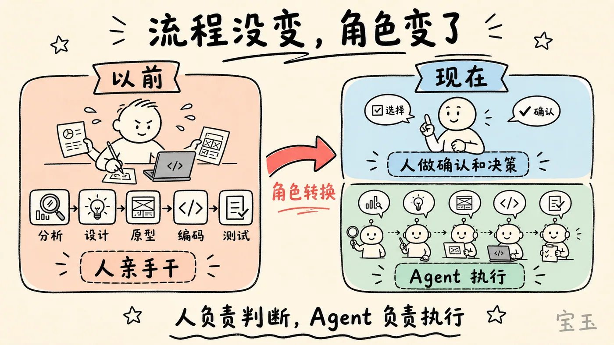
这听起来好像没什么大不了？但当你真正跑通一遍完整流程，你会发现效率提升是数量级的。
需求从哪来
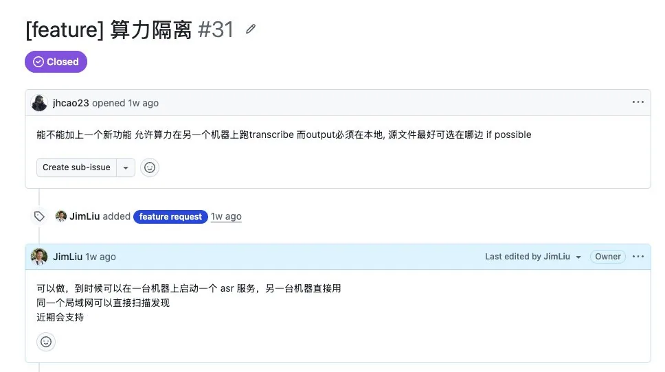
这个功能起源于一个 GitHub Issue。有用户给我的字幕转录翻译 App（BaoCut）留言，问能不能加上远程转录功能。
场景很具体：他有两台电脑，一台性能好算力强的电脑 A，另一台是日常办公用的电脑 B。他想在电脑 B 上用 BaoCut 的时候，把需要算力的转录任务丢给电脑 A 去跑。
我一看就觉得这是个好需求：场景合理，对用户有价值，和产品定位也吻合。
但我没有马上打开编辑器写代码。
第一关：可行性分析——先决定要不要做
这是整个流程中最容易被跳过、但最不该被跳过的一步。
先决定要不要做，再去做。这句话听起来像废话，但我吃过太多亏了。
就拿前几天来说，我还做了一个用本地文本模型辅助拆分对齐字幕的功能，做可行性分析的时候觉得技术上没问题，做完了实际体验才发现效果很糟糕，最后还是砍掉了，浪费了好几天时间和一堆 token。你看，就算做了可行性分析，有时候也会判断失误。但这不代表可行性分析没用，没有这一步，你踩的坑只会更多。
它是一个期望值的赌注：大部分时候能帮你避开弯路，偶尔也会看走眼。
可行性分析通常看两个层面：
- 产品角度：这个功能有没有价值？和 App 的定位是不是匹配？
- 技术角度：技术上能不能做到？成本是不是可控？
这次产品层面我已经判断了——值得做。所以我只需要聚焦在技术可行性上。
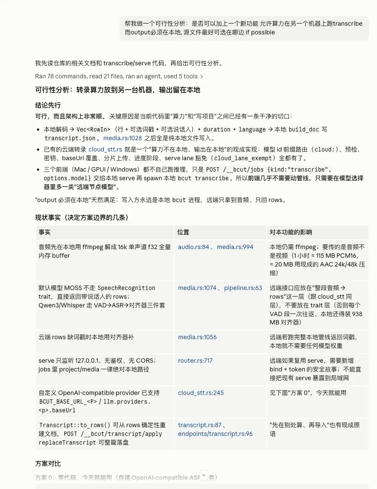
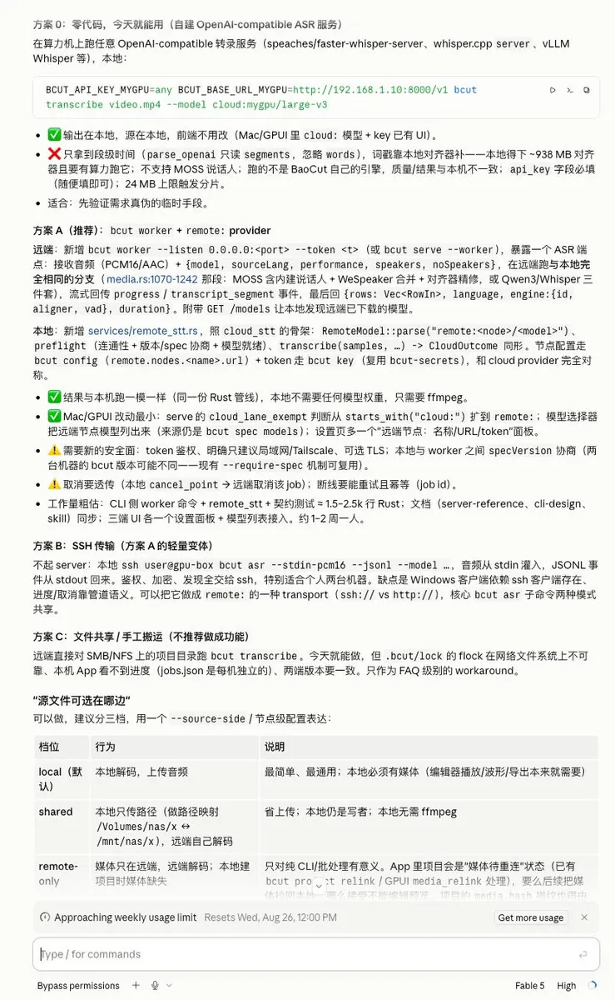
我把用户的原始需求发给 Claude Code，让它结合项目现状做一个可行性分析。它分析完给出了判断：可行，并列出了几个技术方案。
我快速扫了一遍这些方案，很快有了自己的判断：
- 方案 0 和方案 C 不需要改代码，但对用户太不友好，得自己搭 ASR 服务器，普通用户玩不转
- 方案 A 最优，装了 App 就能启动自己的转录服务，对用户来说最简单
- 方案 B 对 Windows 不够友好
所以决定按方案 A 推进，同时把方案 0 中"提供 HTTP 转录 API"这个附加功能一并加上。
注意这里的模式：Agent 做分析和罗列方案，人做最终判断和拍板。这就是"人在关键路径确认"的含义——你不需要自己去研究每个技术方案的细节，但你需要基于自己的产品判断和技术直觉做最终决策。
第二关：设计文档——Agent 之间的桥梁
确定了可行性和技术方向，我还是没有马上写代码。下一步是让 Agent 写设计文档。
为什么需要文档？这里涉及到 AI 原生开发的一个关键认知：
文档在 AI 时代有了全新的角色，它是人和 Agent 之间、以及 Agent 和 Agent 之间的桥梁。
传统开发中，文档经常是一种负担，写完就过时了，大家也不爱看。但在 AI 原生开发中，文档变成了最重要的中间媒介，原因有两个：
第一，文档是给人确认和修改的载体。Agent 把方案写成文档，你可以通读一遍，看方向对不对，细节有没有问题，直接在文档上改。
第二，文档是 Agent Session 之间传递上下文的媒介。每一个 Agent Session 的上下文窗口是有限的，当你从"设计"进入"开发"，往往是一个新的 Session。前一个 Session 的思考过程、决策依据、技术方案，都需要通过文档传递给下一个 Session。没有文档，下一个 Session 就是从零开始。
换句话说，文档是 AI 原生开发中的"记忆载体"。
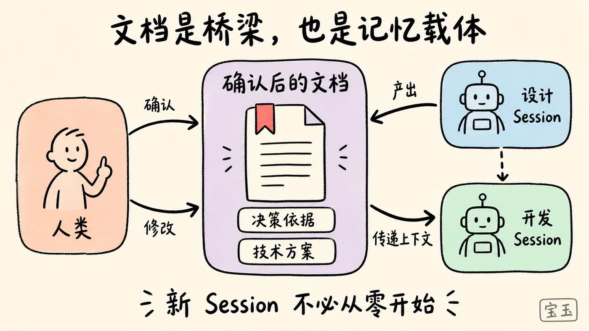
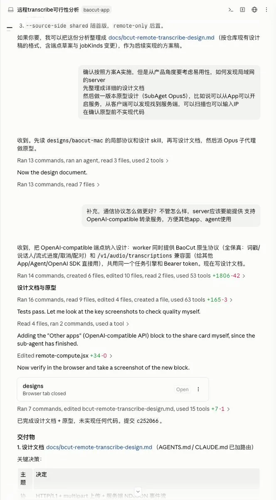
我这里让写的设计文档是产品设计和技术设计的混合体——描述清楚需求是什么、架构怎么设计、接口怎么定义。目的是把这些信息固化下来，让后续实施的 Agent 有明确的参照，也让人类有一个可以检查方向的锚点。
理想状态下，每个阶段结束时都应该生成一份可以留档的交付物，如需求文档、设计方案、原型设计、代码和测试。并且这些产出物要和 git 这样的版本管理工具结合起来，跟踪所有变更，那么这些交付物本身还可以作为审计记录：谁提的需求、Agent 产出了什么、谁批准了它。
我承认这次我偷了个懒，设计文档写完后直接去做原型了，主要是之前可行性分析阶段给的方案没什么问题，我也比较信任 Fable 5。但如果是更复杂的项目，你应该仔细审查设计文档，这个成本远低于写完代码再推翻。
这里还有一个关键的操作细节： 确认后的文档，就是下一个 Agent Session 的全部起点。 当你从"设计"进入"开发"，往往是一个新的 Session。这时候你不需要重新向 Agent 解释来龙去脉，只需要一句话："按 docs/remote-transcription.md 实现"。文档里已经写好了所有决策和细节，新的 Session 读完文档就能开始执行。
第三关：高精度原型设计——需求、原型、UI 三合一
这一步是我认为 AI 原生开发中变化最大的环节之一。
传统流程里，需求文档、原型设计、UI 设计是三个独立的步骤，由不同的人完成：产品经理写需求，交互设计师做原型，UI 设计师做视觉稿。每一次交接都有信息损耗，每一次修改都需要多方协调。
在 AI 的加持下，这三者可以合并成一个步骤——高精度原型设计。什么意思？就是你做出来的原型，不是线框图，而是接近最终成品的高保真设计，直接包含了交互逻辑和视觉设计。
这在以前是不可行的，成本极高——你不可能要求一个人同时具备产品思维、交互设计和 UI 设计的能力，就算有，做一个高保真原型也要好几天。但现在，一个 AI Agent 加上一个好的 Design Skill（首推 Claude Design，也可以用我的 baoyu-design，只要在对话中说"原型设计"就能自动触发），就能快速产出高精度原型。
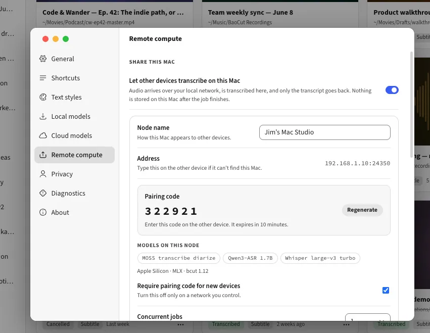
我的 App 有一个配套的原型设计页面，每次增加或修改功能，都会先更新原型。有了设计文档做基础，原型设计就会相对顺利，第一个版本就有不错的效果，它在设置页面里添加了一个新的选项卡，可以开启转录服务、发现网络上的其他节点。
但原型出来了不代表就完事了。 原型设计阶段的修改成本相对很低，而做出真正的产品后再改成本就很高了。 所以这个阶段值得花时间反复打磨。
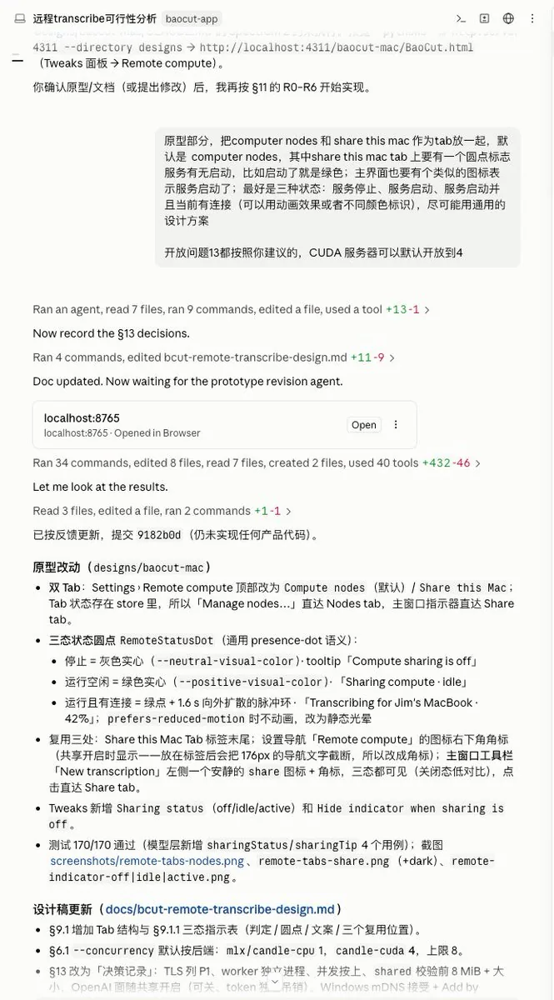
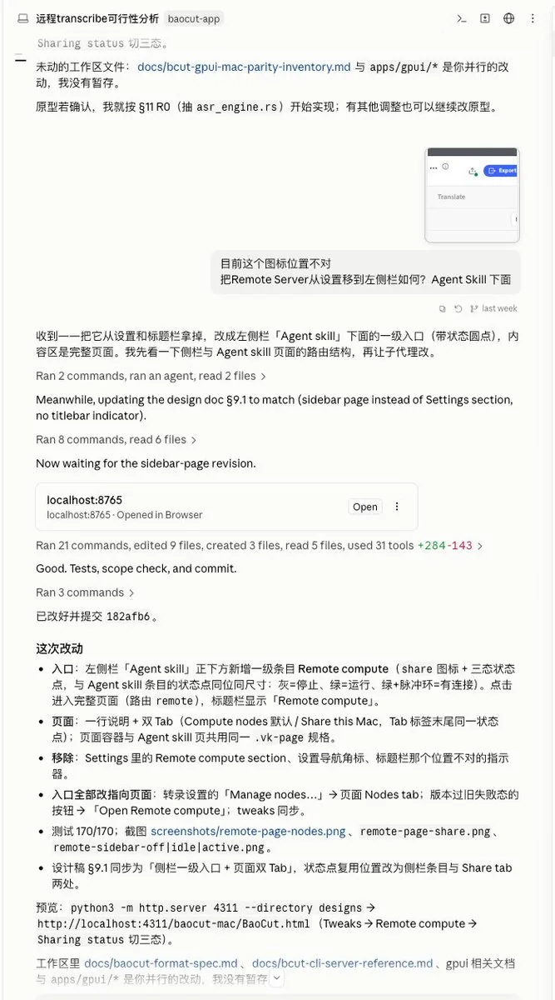
我在原型上反复调整了很多次。先是把布局从列表改成了 Tab，把"开启服务"和"访问其他节点"分开，在我看来这是两个不同的使用场景，混在一起用户会困惑。然后加上了图标来显示服务状态，让用户一眼就知道服务是开着还是关着。
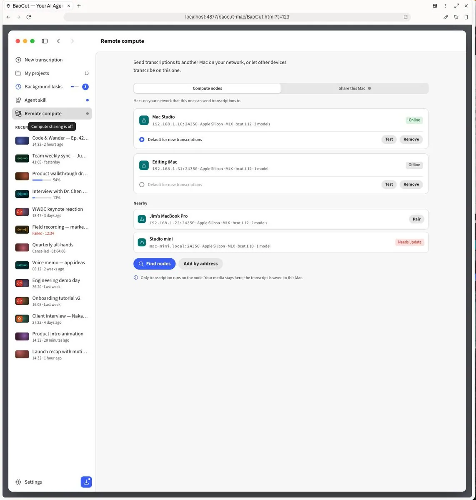
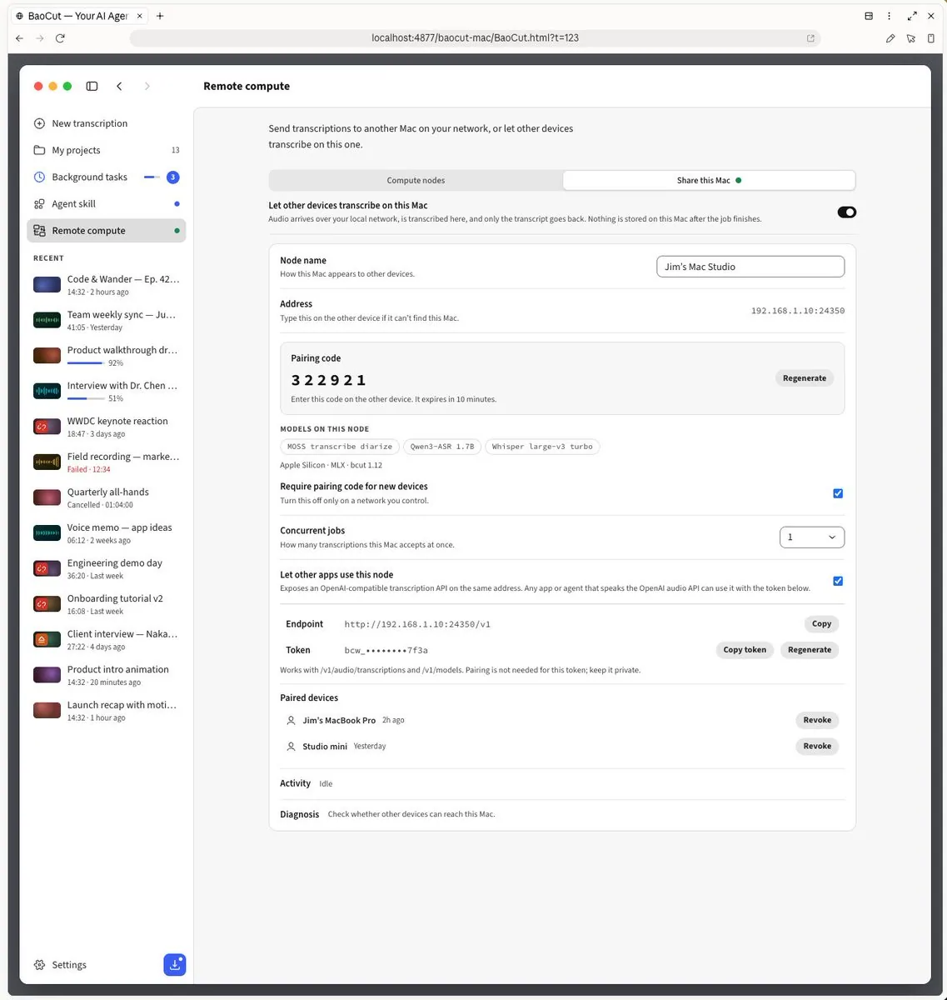
后来我又发现把这个功能放在设置页面里并不方便，用户需要频繁查看服务状态，埋在设置里太深了。所以又把它挪到了主界面。来来回回好几轮，终于觉得差不多了。
注意这里的模式：每一次调整，我只需要用自然语言描述我想要什么变化，Agent 就会修改原型。我的注意力全部放在"这个交互是不是友好"、"这个界面是不是美观"、"用户使用起来是不是自然"这些产品层面的判断上，而不是在纠结像素和布局的实现细节。
为什么原型确认这一步不建议你省掉？ 因为界面和交互一旦开发完成，修改的成本会呈指数级上升。你不仅要改代码逻辑，还要改样式、改状态管理、改测试用例。但在原型阶段，改一个布局可能就是一句话的事。
第四关：实现——代码已经不是瓶颈
如果你走到这一步，手上已经有了设计文档和确认过的高精度原型，那么让 Agent 写代码，对于现在的模型来说，是一件非常简单的事情。
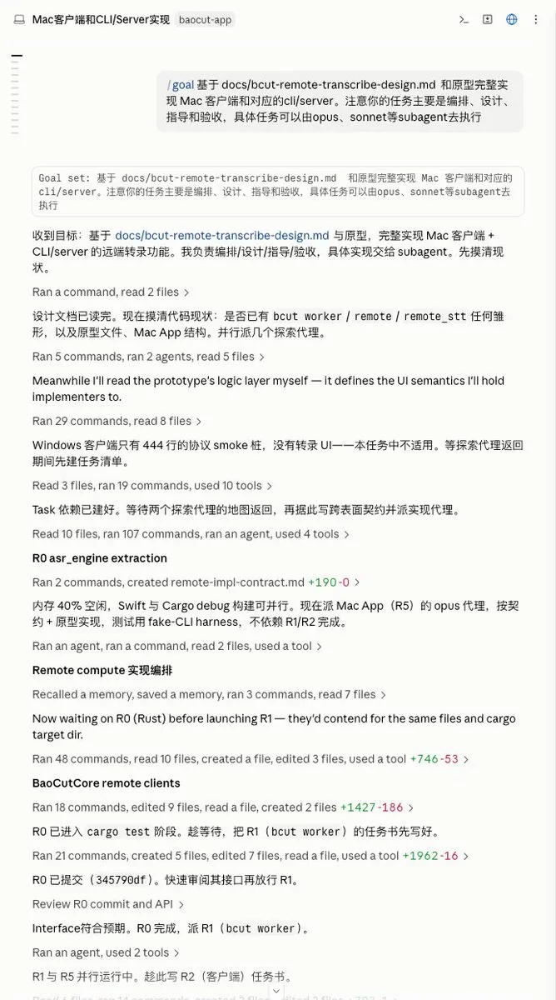
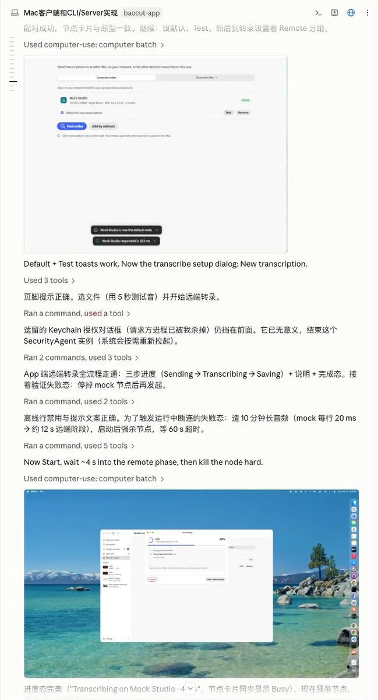
我配合 /goal 命令，把设计文档和原型一起发给 Claude Code（Fable 5），让它按文档里规划的里程碑一个个去实现。它会自己规划实现顺序，自己写代码，自己运行测试，还会自己截图验证结果。
这里有一个容易被忽略的我经常强调的技巧： 让 Agent 自行验证，可以减少你需要介入的次数。 它写完一段代码会自动跑测试，发现失败会自己调试修复；它改完界面会自己截图确认效果。相当于给 Agent 一个自己的反馈循环，让它在你看到结果之前先自己检查一遍。这样你作为人类做最终确认时，拿到的已经是 Agent 自己验证过的结果，而不是一个粗糙的初稿。
这也是为什么合并一些确认环节（比如跳过 Code Review 直接黑盒测试）相对是安全的，Agent 自身能力足够，加上在开发过程中做了自验证，产出质量就会很高。
这个阶段，人需要做的事情非常少，主要就是等，偶尔看一眼进度。
仔细想想你会发现：代码已经不是瓶颈了。传统流程中那些 PRD、估时、安全审查，都是为了在开发阶段之前做好对齐，因为开发可能需要几周甚至几个月。但当 Agent 可以在几个小时内完成编码，以前的这些确认流程在 AI 时代就需要重新审视了。
瓶颈转移到了代码两侧：左边是设计和确认，右边是测试、验证和部署。 这些环节仍然在以人类速度运行，它们才是现在需要优化的地方。
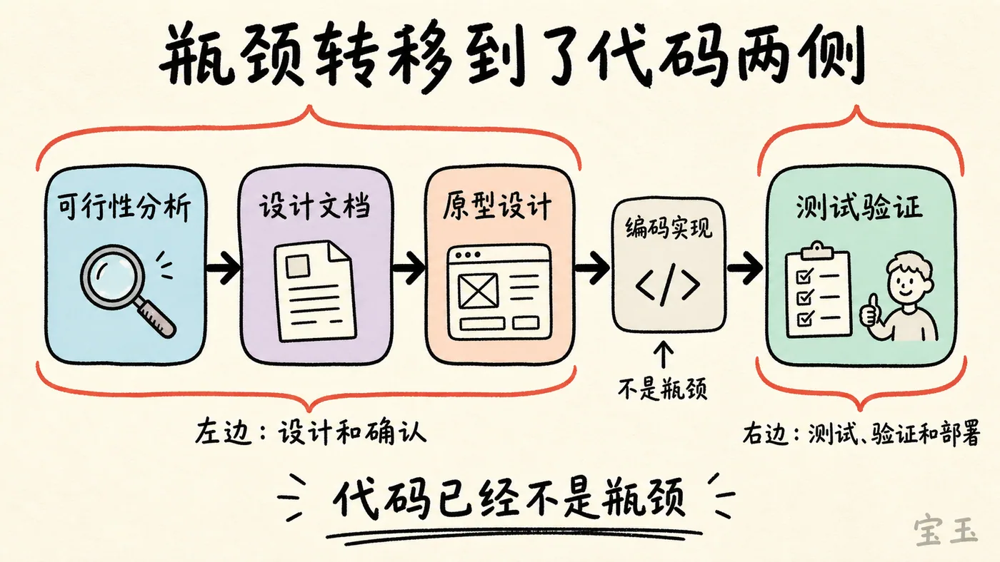
这也是为什么我在前面的可行性分析、设计文档、原型设计上花了那么多篇幅——在 AI 原生开发中，这些"代码之前"的工作反而是最重要的。
第五关：测试——把自己当普通用户
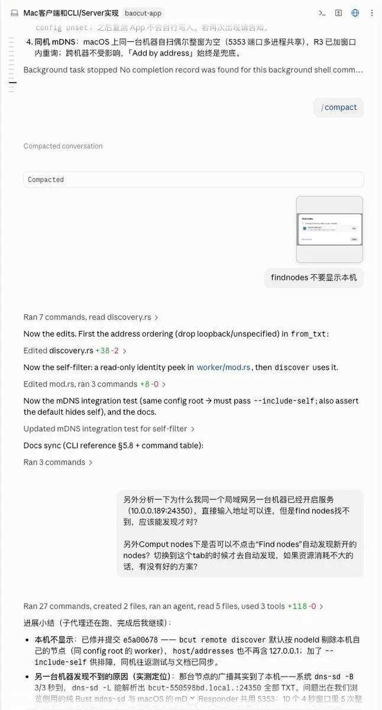
虽然 Agent 会帮你写测试、跑测试、验证结果，但这不代表你可以完全信赖它。接下来你需要自己动手试一试。
关键心态转变： 把自己当普通用户，而不是开发者。
开发者测试和用户测试的视角是完全不同的。开发者会下意识地避开边界情况，按照自己预期的路径操作。但普通用户不会，他们会乱点、会输入你没想到的内容、会用你没预想到的方式使用功能。
所以你要做的是：打开 App，假装自己第一次看到这个功能，凭直觉去用它。看看提示够不够清楚，交互够不够自然，出错了有没有合理的引导。
发现的问题直接扔给 Agent，让它去修。几轮下来，功能就差不多可用了。
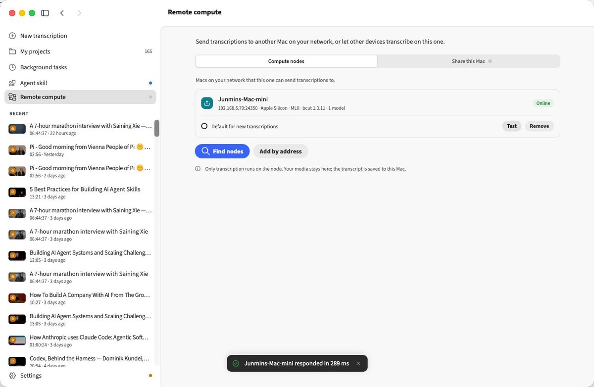
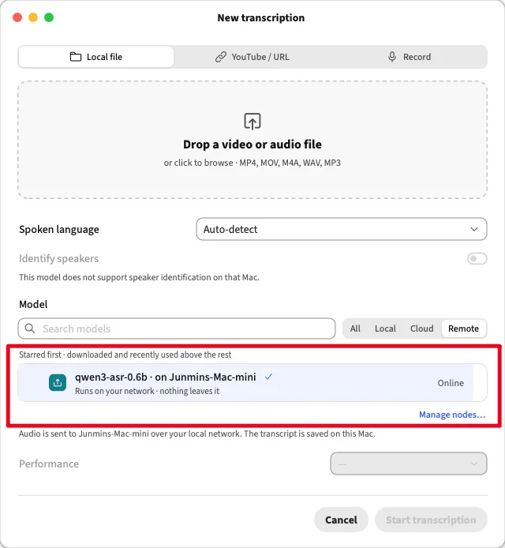
看最终成品：远程转录功能已经完整可用了。
你要问我有没有 Review 代码？没有。我把自己当成 QA，只做了黑盒测试，我信任 Fable 5 的编码能力。这也是前面说的"合并确认环节"的一个具体体现，Agent 在开发过程中已经自己跑过测试、自己截图验证了，我再从用户视角做一轮黑盒测试，两层验证加起来已经足够了。
当然，这个取舍取决于项目的重要程度。如果是金融系统的核心逻辑，你可能还是需要 Code Review。但对于大部分功能开发来说，黑盒测试足够了。
深层思考：到底什么变了？
回过头看整个流程：
可行性分析 → 设计文档 → 原型设计 → 编码实现 → 测试验证
这不就是传统的软件开发流程吗？确实是。
AI 原生开发不是发明了一套新流程，而是用新的方式跑旧的流程。
具体来说，有三个本质变化：
变化一：执行主体从人变成了 Agent
每一个环节，真正干活的都是 Agent。你不需要自己写可行性分析报告，不需要自己画原型图，不需要自己写代码，不需要自己写测试用例。你只需要在关键节点做确认和决策。
你把精力集中在判断和决策上，Agent 处理执行和细节。
变化二：确认环节可以合并，但不能省略
传统流程中，需求确认、原型确认、UI 确认是三个独立的评审会。现在你可以把它们合并，需求文档、原型设计、UI 设计一体化成高精度原型，一次性确认。设计文档和原型设计也可以放在一起看。
但确认环节本身绝对不能省。 每一个确认环节都有它存在的理由：
- 可行性确认：先决定要不要做，避免做了半天发现白忙活
- 技术方案确认：方向是不是最优，有没有更好的路径
- 原型/UI 确认：交互是不是友好，界面是不是美观，做出来再改成本极高，原型阶段修改极容易
- 测试确认：站在用户角度验证好不好用，而不是站在开发者角度验证能不能跑
你可以加速确认（合并环节、简化流程），但不能跳过确认。 人的判断力是整个流程中不可替代的部分。
变化三：文档重要性更高
在传统开发中，文档是附属品，代码写完补文档，甚至不补。但在 AI 原生开发中，文档成了核心基础设施。
它承担两个关键职能：
- 给人类做确认和修改的载体，你可以审查设计文档、批注原型设计、修改技术方案，这些动作都发生在文档层面
- 给 Agent 的 Session 之间传递上下文，你的设计文档会被传递给开发 Session，你的原型会被传递给实现 Session，每一个 Session 不再是孤立的
如果你用过 Claude Code，你会对这一点深有体会。每次你开一个新的 Session，你需要把之前的上下文重新给它说一遍。而文档就是最好的上下文传递载体，它比口头描述更精确，比聊天记录更有结构。
当然文档也会带来新的问题，就是如果版本没有及时更新，反而会产生错误的上下文。
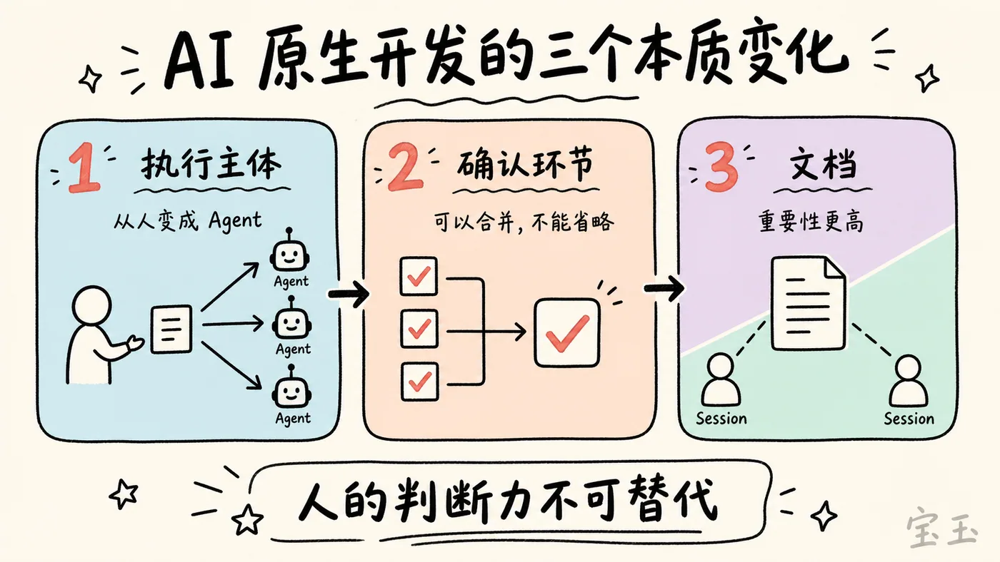
关于 Skills 的一个反直觉的观点
最后说一个很多人关心的话题：你用了什么 Skills？需不需要装很多开发类的 Skills 来增强 Agent 的编码能力？
我的答案可能会出乎意料： 大部分开发类 Skills 是没必要的。
现在的大模型在编码方面已经训练得极好了。你看我整个流程中和 Agent 的对话，都是非常简单的自然语言提示词："帮我分析一下可行性"、"按方案 A 写个设计文档"、"按这个设计做原型"、"按文档实现"。没有复杂的 prompt engineering，没有特殊的 coding skills。
回想一下前面说的：瓶颈转移到了代码两侧。代码本身已经不需要增强了，需要增强的是两侧，左边的设计确认，和右边的测试验证与部署。
我一般只用两类 Skills，恰好对应这两个瓶颈：
第一类是辅助设计确认的——解决左侧瓶颈。 比如 Claude Design / baoyu-design 这类将原型设计和 UI 设计合二为一的工具。它帮我快速产出高精度原型，让我可以在代码之前就确认界面和交互。
第二类是自动化减少体力劳动的——解决右侧瓶颈。 比如自动部署、自动发布这类。编码完成后还有打包、部署、发布这些环节，它们不需要判断力，但耗时间。还有 /goal 这样的命令，可以让 Agent 按里程碑自动推进，减少你手动拆分任务的工作。
中间那一层——编码本身，模型已经足够好了，简单的指令就能得到高质量的代码。 把精力花在流程设计上，比花在 prompt 优化上回报大得多。
写在最后
回头看这个功能，从 GitHub Issue 到完整可用，写代码我几乎没花时间，花时间最多的地方是可行性的判断、原型的反复打磨、测试时把自己当小白用户去折腾。这些恰恰是 Agent 替代不了的部分：做不做、方向对不对、好不好用，每一个都需要人来拍板。
AI 原生开发的精髓也在于此：开发流程还是老样子，但人的角色变了。你从写代码的人，变成了管理 Agent 的人；产出不再是代码，而是一个个判断和决策。
我知道放下对代码的执念不容易，尤其是写了很多年代码的人，不看每一行就合并，心里总有点不踏实。我也是一步步才走到今天这种"只做黑盒测试"的状态。但趋势摆在那里：模型的编码能力只会越来越强，人的价值会越来越集中在代码两侧。越早完成这个角色转换，你从 AI 手里拿到的杠杆就越大。